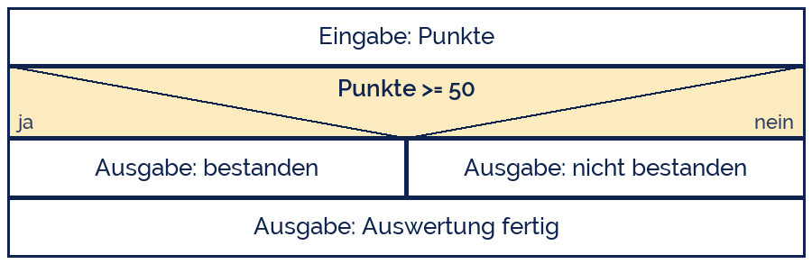
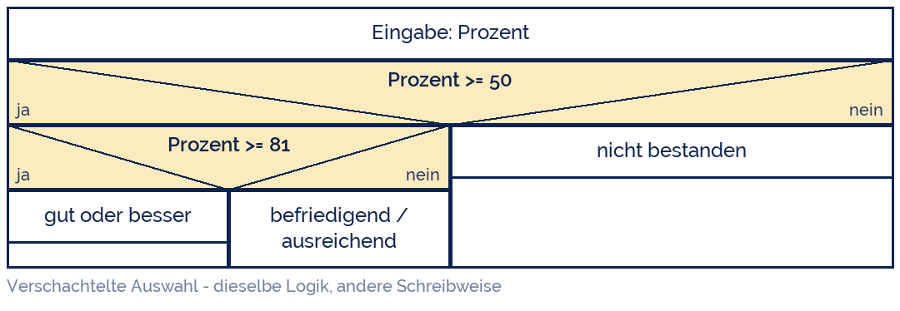

tjuusitalo
tjuusitalo
Good morning!
Nur das Schöne wird die Welt retten!
Fjodor Dostojewski
Nicht verzagen, Doc Alvers fragen!
Informatik — FOS 12
Grundstruktur II: die Auswahl
Entscheidungen treffen: if, elif, else — und die Bedingung dahinter
Nicht verzagen, Doc Alvers fragen!
Kapitel 01
Die Verzweigung
Genau ein Weg wird gegangen
Nicht verzagen, Doc Alvers fragen!
Was eine Auswahl ausmacht
Eine Bedingung wird geprüft — sie ist entweder wahr oder falsch, nie „vielleicht“
Je nach Antwort läuft der eine oder der andere Zweig — nie beide
Nach der Auswahl geht es für alle wieder gemeinsam weiter
Einseitig: nur ein Zweig hat Inhalt (if ohne else)
Zweiseitig: beide Zweige tun etwas (if … else)
Nicht verzagen, Doc Alvers fragen!
Zweiseitige Auswahl
Das Dreieck teilt: links ja, rechts nein
Beide Zweige sind gleich breit — sie sind gleichwertig
Der Kasten darunter läuft immer, egal welcher Zweig gewählt wurde
In Python entspricht die Breite der Einrückung

Nicht verzagen, Doc Alvers fragen!
Und so sieht es in Python aus
punkte = int(input('Punkte: '))
if punkte >= 50:
print('bestanden')
else:
print('nicht bestanden')
print('Auswertung fertig') # laeuft immer - keine Einrueckung
# Einseitig - else darf fehlen:
if punkte == 60:
print('Volle Punktzahl!')Nicht verzagen, Doc Alvers fragen!
Kapitel 02
Bedingungen
Woraus eine Ja/Nein-Frage gebaut wird
Nicht verzagen, Doc Alvers fragen!
Vergleichsoperatoren
| Zeichen | bedeutet | Beispiel | Ergebnis |
|---|---|---|---|
| == | ist gleich | note == 1 | True / False |
| != | ist ungleich | name != 'Lena' | True / False |
| < > | kleiner, größer | punkte > 50 | True / False |
| <= >= | kleiner/größer gleich | punkte >= 50 | True / False |
| in | ist enthalten in | 'a' in 'Lena' | True |
Ein Gleichheitszeichen weist zu, zwei vergleichen — der häufigste Anfängerfehler
Das Ergebnis eines Vergleichs ist ein bool: True oder False
Vorsicht bei float: 0.1 + 0.2 == 0.3 ist False — lieber auf kleine Abweichung prüfen
Nicht verzagen, Doc Alvers fragen!
Verknüpfen: and, or, not
| A | B | A and B | A or B | not A |
|---|---|---|---|---|
| True | True | True | True | False |
| True | False | False | True | False |
| False | True | False | True | True |
| False | False | False | False | True |
and ist nur wahr, wenn beides stimmt — or schon, wenn eines stimmt
„zwischen 50 und 60“ heißt: punkte >= 50 and punkte <= 60
In Python geht auch die Kurzform 50 <= punkte <= 60
Nicht verzagen, Doc Alvers fragen!
Bedingungen zusammenbauen
alter = int(input('Alter: '))
mitglied = input('Mitglied (j/n): ') == 'j'
if alter < 18 and mitglied:
print('ermaessigt und Mitgliederrabatt')
elif alter < 18 or alter >= 65:
print('ermaessigt')
else:
print('voller Preis')
if not mitglied:
print('Hinweis: als Mitglied waere es guenstiger.')Nicht verzagen, Doc Alvers fragen!
Kapitel 03
Mehrfachauswahl
Wenn es mehr als zwei Wege gibt
Nicht verzagen, Doc Alvers fragen!
Der Notenschlüssel mit elif
punkte = int(input('Punkte von 60: '))
prozent = punkte / 60 * 100
if prozent >= 92:
note = 1
elif prozent >= 81:
note = 2
elif prozent >= 67:
note = 3
elif prozent >= 50:
note = 4
elif prozent >= 30:
note = 5
else:
note = 6
print(f'{prozent:.1f} % - Note {note}')Nicht verzagen, Doc Alvers fragen!
Die Reihenfolge entscheidet
Python prüft von oben nach unten und nimmt den ersten Zweig, der passt
Danach wird der Rest übersprungen — nicht mehr geprüft
Deshalb vom Strengsten zum Lockersten ordnen: erst 92, dann 81, dann 67 …
Umgedreht wäre jede Punktzahl über 30 sofort eine 5 — der Klassiker unter den Logikfehlern
Ein else am Ende fängt alles ab, was übrig bleibt — es braucht keine Bedingung
Nicht verzagen, Doc Alvers fragen!
Verschachtelt oder mit elif?

Beides ist richtig — elif ist die flachere und meist lesbarere Form
Verschachteln lohnt, wenn die innere Frage nur im einen Zweig überhaupt sinnvoll ist
Nicht verzagen, Doc Alvers fragen!
Kapitel 04
Testen an den Rändern
Fehler sitzen fast immer an der Grenze
Nicht verzagen, Doc Alvers fragen!
Grenzwerte für den Notenschlüssel
| Prozent | erwartete Note | warum dieser Wert? |
|---|---|---|
| 91.9 | 2 | knapp unter der Grenze |
| 92.0 | 1 | genau auf der Grenze — >= oder > ? |
| 92.1 | 1 | knapp darüber |
| 49.9 | 5 | letzte Fünf |
| 50.0 | 4 | die wichtigste Grenze überhaupt |
| 0 / 100 | 6 / 1 | die beiden Extremwerte |
Testet immer direkt unter, genau auf und direkt über jeder Grenze
Der häufigste Logikfehler heißt Zaunpfahlfehler: > statt >= (oder umgekehrt)
Nicht verzagen, Doc Alvers fragen!
Genau ein Zweig wird ausgeführt — und Python nimmt den ersten, der passt. Die Reihenfolge der Bedingungen ist Teil der Lösung.
Merksatz
Nicht verzagen, Doc Alvers fragen!
Fun Facts: Entscheidungen
Der Zaunpfahlfehler (off-by-one) hat einen eigenen Namen, weil er so oft passiert: 10 Meter Zaun, alle 2 Meter ein Pfahl — sechs Pfähle, nicht fünf
and und or rechnen faul (short-circuit): steht links schon das Ergebnis fest, wird rechts gar nicht mehr geprüft
Der Therac-25 (1985–87) bestrahlte Patienten wegen eines fehlerhaften Zustandsvergleichs tödlich — bis heute Pflichtlektüre
Python hat kein switch/case — bis Version 3.10, seitdem gibt es match
Fast alle Sprachen schreiben == für den Vergleich, weil = schon zum Zuweisen vergeben war
Nicht verzagen, Doc Alvers fragen!
Eure Aufgabe: entscheiden lassen
Notenrechner: Punkte einlesen, Prozent berechnen, Note nach dem Schlüssel oben ausgeben
Erweitert um eine Meldung: unter 50 % zusätzlich „Nachprüfung möglich“
Schaltjahr: Jahr einlesen und prüfen (teilbar durch 4, aber nicht durch 100, außer durch 400)
Dreieck: drei Seitenlängen einlesen und ausgeben, ob gleichseitig, gleichschenklig oder ungleichseitig — und ob es überhaupt ein Dreieck ist
Zu jeder Aufgabe: Struktogramm und eine Tabelle mit Grenzwert-Testfällen
Nicht verzagen, Doc Alvers fragen!